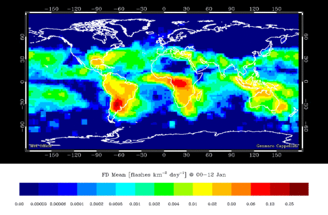
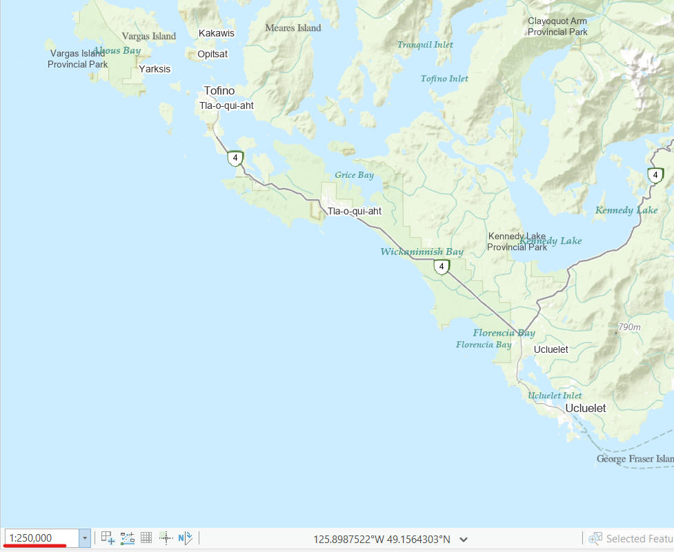
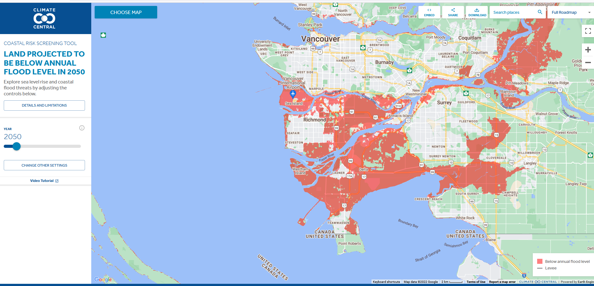

What is Data?
Peices of information that describe a phenomenon.
What is a Phenomenon?
Phenomenon: a fact or situation that is observed to exist or happen, especially one whose cause or explanation is in question.
- A lightning strike
- A coastline
- A country
- A dog on a kayak!
- Anything and everything are phenomena!


Types of Phenomena
Discrete Objects
- Distinct boundaries
- Chat can be exactly measured
- Finite
- They are countable and cannot be infinitely subdivided
Continuous Fields
- Everywhere has a value
- They are not countable and can be infinitely subdivided
Types of Phenomena
When is a phenomenon discrete or continuous?
- To an extent, it depends on our perspective and the scale of our analysis.
- Many phenomenon are a bit of both.
Lightning
- A strike is a discrete object
- What about a lighting bolt ...?
- Doesn't really have clearly defined boundaries?
- Sort of continuous
- Strike frequency is a continuous field
- Everywhere has a frequency of lighting strikes
- Even the absence of lighting strikes, is still a frequency of strikes

A Coastline
- Continuous field at large scale
- Tides & waves
- Where is the exact boundary?
- Discrete object at small scale
- Zoom out and the tides/waves don't really matter
- Its easy to draw a static boundary
- Unless you change the time scale
- Until you start thinking about the long term :(


Types of Phenomena
Most things don't fall perfectly into one category or the other.
- That said, it is a helpful framework as long as we recognize the discrete vs. continuous dichotomy is not a perfect classification
TopHat Question 1
Discrete objects are infinitely divisible.
- True
- False